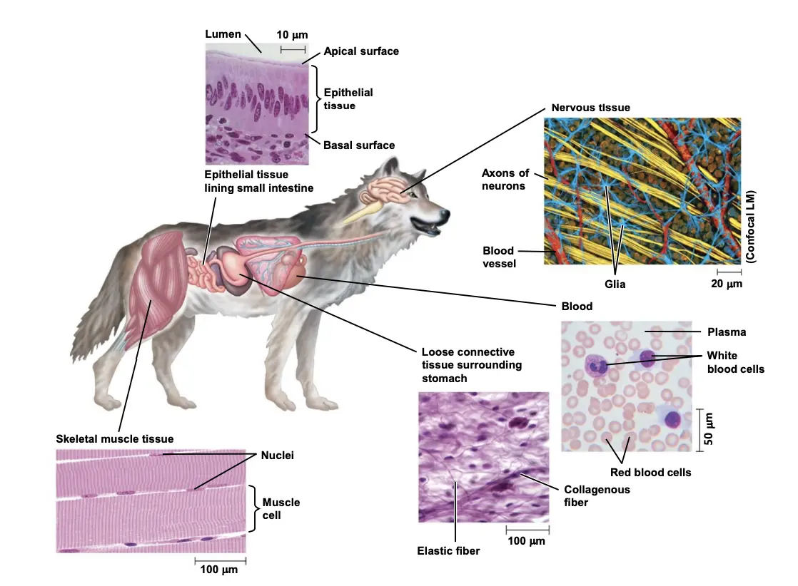
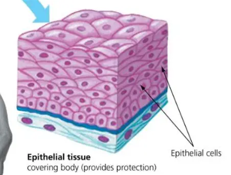
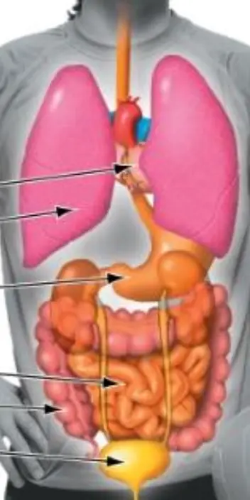
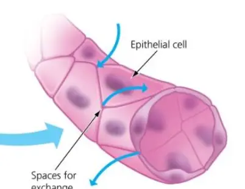
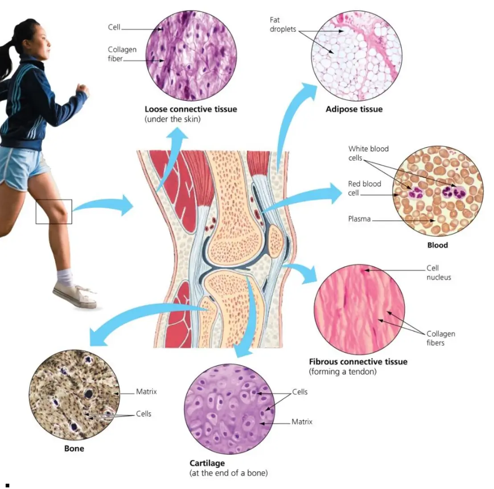
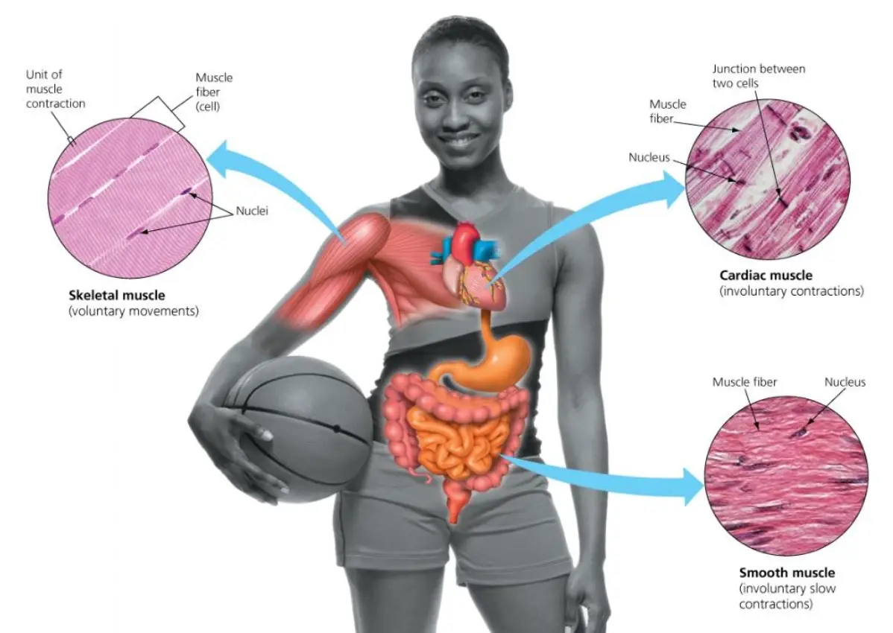
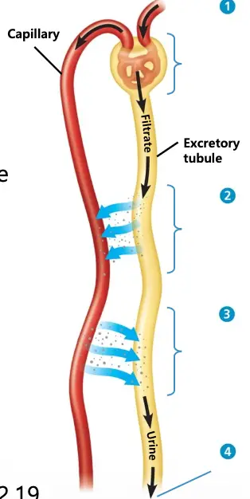
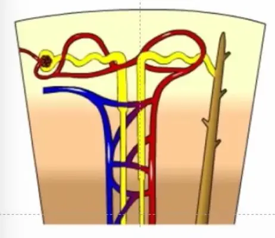

| Organ System | Main Components (구성 요소) |
Main Functions (주요 기능) |
|---|---|---|
| Digestive 소화계 | Mouth, pharynx, esophagus, stomach, intestines, liver, pancreas, anus | 음식 섭취·소화·흡수·배출 |
| Circulatory 순환계 | Heart, blood vessels, blood | 산소·양분·노폐물 등 물질을 온몸에 운반 |
| Respiratory 호흡계 | Lungs, trachea, other breathing tubes | 산소 흡수, 이산화탄소 배출(가스 교환) |
| Immune & Lymphatic 면역·림프계 | Bone marrow, lymph nodes, thymus, spleen, lymph vessels | 병원체 방어, 면역 반응, 암세포 제거 |
| Excretory 배설계 | Kidneys, ureters, urinary bladder, urethra | 노폐물 배출, 체액 삼투압 조절 |
| Endocrine 내분비계 | Pituitary, thyroid, pancreas, adrenal, hormone-secreting glands | 호르몬을 통한 신체 기능 조절(대사, 소화 등) |
| Reproductive 생식계 | Ovaries or testes and associated organs | 생식세포 생성, 수정·배아 발달 지원 |
| Nervous 신경계 | Brain, spinal cord, nerves, sensory organs | 자극 감지, 신체 활동 조절, 반응 생성 |
| Integumentary 외피계 | Skin, hair, claws, sweat glands | 신체 보호(물리적 손상·감염), 탈수 방지, 체온 조절 |
| Skeletal 골격계 | Bones, tendons, ligaments, cartilage | 신체 지지, 내부 장기 보호, 움직임 보조 |
| Muscular 근육계 | Skeletal muscles | 신체 움직임과 이동 |






| 구분 | **내분비계** | **신경계** |
|---|---|---|
| 신호 분자 | 호르몬 | 신경전달물질 |
| 이동 경로 | 혈액을 통해 전신 | 뉴런 축삭을 따라 특정 표적 |
| 전달 속도 | 상대적으로 느림 | 매우 빠름 |
| 지속 시간 | 지속적 | 비지속적 |
| 작용 범위 | 넓음(전신) | 좁음(특정 세포) |
| 반응 조건 | 수용체를 가진 세포만 반응 | 시냅스에 연결된 표적세포만 반응 |
(내용 없음)

